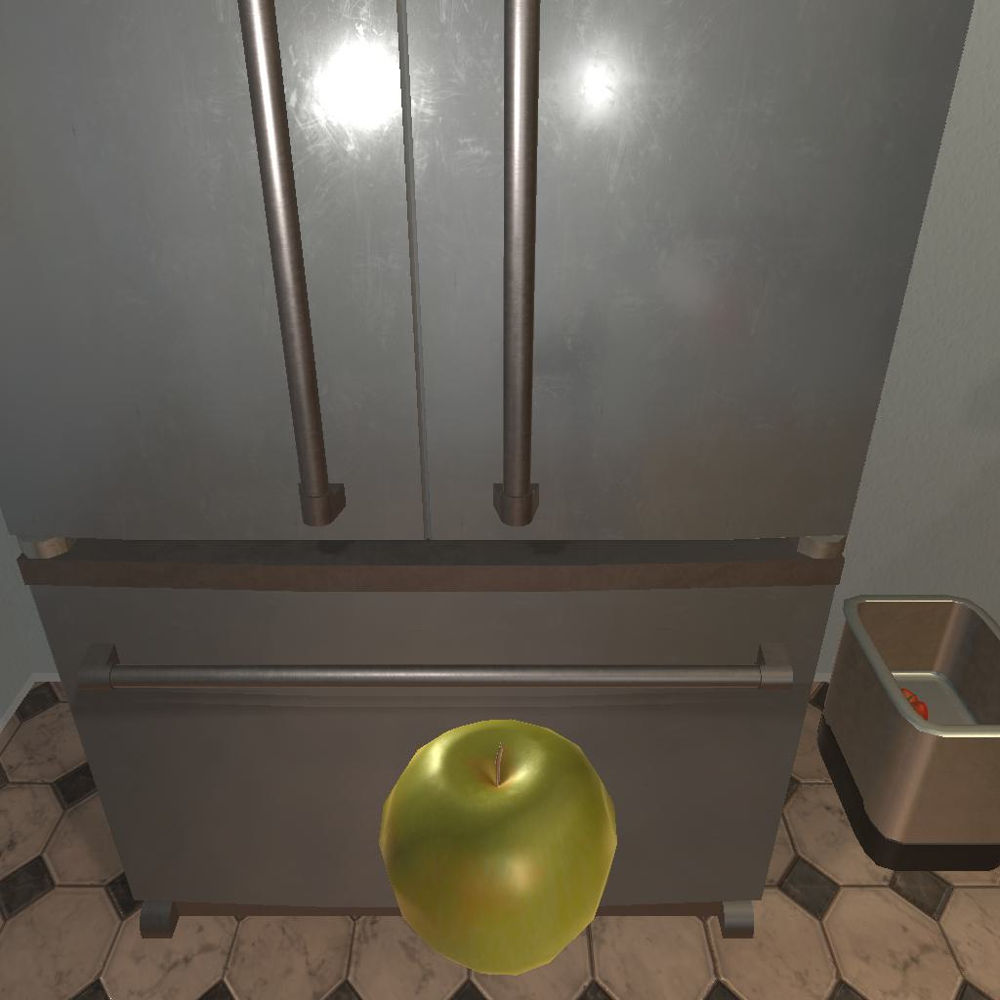

---------------------------------------------------------task: 20---------------------------------------------------------
--------------------------------------------------------------------------------------------------------------------------------------------------------------------
--------------------------------------------------------------------------------------------------------------------------------------------------------------------
Step:--------------------------------------------------------------------------17-------------------------------------------------------------------------------
----------------------------------------
VLM Prompt:
Image1:
Image2:
**Instruction**
1. Analyze the provided images to identify all visible household objects and compare the difference between images (e.h. whether the object is opened or not and taken on hand or not), focusing on those relevant to the task description "put a hot apple in garbagecan."
2. Use the analysis of images and the task hint "The agent must find an object of the desired type, pick it up, go to a microwave, heat the object with the microwave, then find the correct location to place it, and put it down there. The agent does not need to use the microwave button or open the microwave to heat the object, and the agent just needs to do action that is "heat the object with the microwave"." to answer the question: what is the most reasonable action in the choices for the task description "put a hot apple in garbagecan"?
3. Decide and write the answer using the template: The answer is: (i): , where i is the real number. If there is no desired object in images, search every place based on **Initial Observation** to find the object. And if no one is exactly correct, choose a similar answer.
**Initial Observation**
You are in the middle of a room. Looking quickly around you, you can see cabinet (1-18), countertop (1-4), sink (1), drawer (1-7), sinkbasin (1), coffeemachine (1), microwave (1), garbagecan (1), stoveburner (1-4), toaster (1), fridge (1)
**Answer Choices**
(1): go to cabinet 1
(2): go to cabinet 2
(3): go to countertop 1
(4): go to cabinet 3
(5): go to cabinet 4
(6): go to cabinet 5
(7): go to sink 1
(8): go to cabinet 6
(9): go to drawer 1
(10): go to drawer 2
(11): go to sinkbasin 1
(12): go to cabinet 7
(13): go to cabinet 8
(14): go to coffeemachine 1
(15): go to microwave 1
(16): go to cabinet 9
(17): go to countertop 2
(18): go to cabinet 10
(19): go to drawer 3
(20): go to drawer 4
(21): go to drawer 5
(22): go to cabinet 11
(23): go to cabinet 12
(24): go to cabinet 13
(25): go to cabinet 14
(26): go to stoveburner 1
(27): go to countertop 3
(28): go to stoveburner 2
(29): go to stoveburner 3
(30): go to stoveburner 4
(31): go to drawer 6
(32): go to cabinet 15
(33): go to cabinet 16
(34): go to cabinet 17
(35): go to cabinet 18
(36): go to toaster 1
(37): go to drawer 7
(38): go to countertop 4
(39): go to fridge 1
(40): take tomato 1 from garbagecan 1
(41): examine garbagecan 1
**Answer**
Let's think step by step by following the instructions.
----------------------------------------
----------------------------------------
Original Response:
Image Analysis:
In both images, we can see a garbagecan on the right-hand side with a tomato inside it. In Image 1, there is a large, golden apple placed on the floor in front of what appears to be a microwave oven. In Image 2, the apple is no longer on the floor but is now inside the garbagecan alongside the tomato.
Task Analysis:
The task description is to "put a hot apple in garbagecan." Based on the images, the apple has already been placed in the garbagecan, which is visible in Image 2. However, there is no indication from the images whether the apple is hot or not. As per the task hint, the agent does not need to use the microwave's button or open it to heat the object, so we can assume that the apple may have been heated if the agent performed the "heat the object with the microwave" action prior to placing it in the garbagecan.
Most Reasonable Action:
Given that the task is already completed as the apple is in the garbagecan, the most reasonable action would be to examine the garbagecan to ensure the task was completed correctly, i.e., the apple is indeed hot. Therefore, the most reasonable action from the given choices would be to examine the garbagecan to confirm the apple's state.
The answer is: (41): examine garbagecan 1.
----------------------------------------
----------------------------------------
>>> Refine Original VLM Response and Get Pure Action: examine garbagecan 1
----------------------------------------
-----------------------------------------------------------------
Running time: 13.766965866088867 seconds
Total Money: 10.279360000000002
-----------------------------------------------------------------
-----------------------------------------------------------------
Text Observation:On the garbagecan 1, you see a apple 2, and a tomato 1.
-----------------------------------------------------------------
UNSUCCEED